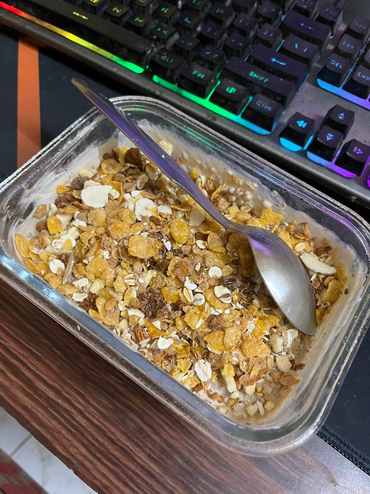

Oats Breakfast

Description:
This is one of the most nutritious and protein filled breakfast to keep you guys energized throughout the day
Ingredients
- Oats
- Salt
- Cinnamon Powder
- Peanut Butter
- Chia Seeds
- Milk
- Yogurt
- Date Syrup
- Greek Yogurt
- Almonds
- Cashews
- Muesli
- Pomegranate or any fruits
Steps
- Firstly put oats, Cinnamon powder, salt, chia seeds, peanut butter, salt, milk and water in a pan and cook it on low heat until it becomes thick
- Now let the oats mixture cool and smash cashews and almonds into small pieces
- Mix the Greek Yogurt and Dates Syrup into the oats well
- Transfer it into a bowl and then garnish it with the dry fruits mixture on top. Put Muesli on top for taste and also put Pomegranate or any other fruits of your liking on top
- Enjoy the dish